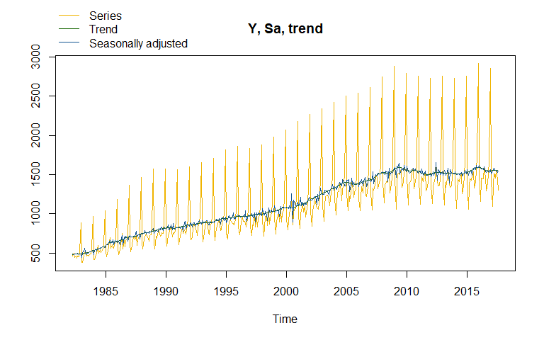

rjd3x13 offers full access to options and outputs of X-13 (rjd3x13::x13()), including RegARIMA modelling (rjd3x13::regarima()) and X-11 decomposition (rjd3x13::x11()).
A specification can be created with rjd3x13::regarima_spec(), rjd3x13::x11_spec() or rjd3x13::x13_spec() and can be modified with the following functions:
for pre-processing:
rjd3toolkit::set_arima(),rjd3toolkit::set_automodel(),rjd3toolkit::set_basic(),rjd3toolkit::set_easter(),rjd3toolkit::set_estimate(),rjd3toolkit::set_outlier(),rjd3toolkit::set_tradingdays(),rjd3toolkit::set_transform(),rjd3toolkit::add_outlier(),rjd3toolkit::remove_outlier(),rjd3toolkit::add_ramp(),rjd3toolkit::remove_ramp(),rjd3toolkit::add_usrdefvar();for decomposition:
rjd3x13::set_x11();for benchmarking:
rjd3toolkit::set_benchmarking().
Installation
Running rjd3 packages requires Java 17 or higher. How to set up such a configuration in R is explained here
Latest release
To get the current stable version (from the latest release):
- From GitHub:
# install.packages("remotes")
remotes::install_github("rjdverse/rjd3toolkit@*release")
remotes::install_github("rjdverse/rjd3x13@*release")- From r-universe:
install.packages("rjd3x13", repos = c("https://rjdverse.r-universe.dev", "https://cloud.r-project.org"))Development version
You can install the development version of rjd3x13 from GitHub with:
# install.packages("remotes")
remotes::install_github("rjdverse/rjd3x13")Usage
library("rjd3x13")
y <- rjd3toolkit::ABS$X0.2.09.10.M
x13_model <- x13(y)
summary(x13_model$result$preprocessing) # Summary of regarima model
#> Log-transformation: yes
#> SARIMA model: (2,1,1) (0,1,1)
#>
#> Coefficients
#> Estimate Std. Error T-stat Pr(>|t|)
#> phi(1) 0.34740 0.06502 5.343 1.53e-07 ***
#> phi(2) 0.21733 0.06000 3.622 0.000329 ***
#> theta(1) -0.69937 0.05115 -13.672 < 2e-16 ***
#> btheta(1) -0.48038 0.06993 -6.869 2.45e-11 ***
#> ---
#> Signif. codes: 0 '***' 0.001 '**' 0.01 '*' 0.05 '.' 0.1 ' ' 1
#>
#> Regression model:
#> Estimate Std. Error T-stat Pr(>|t|)
#> td 0.0023233 0.0006844 3.395 0.000755 ***
#> easter 0.0520113 0.0084894 6.127 2.14e-09 ***
#> TC (2000-06-01) 0.1590340 0.0288578 5.511 6.38e-08 ***
#> AO (2000-07-01) -0.2900774 0.0400551 -7.242 2.26e-12 ***
#> ---
#> Signif. codes: 0 '***' 0.001 '**' 0.01 '*' 0.05 '.' 0.1 ' ' 1
#> Number of observations: 425, Number of effective observations: 412, Number of parameters: 9
#> Loglikelihood: 746.7517, Adjusted loglikelihood: -2120.875
#> Standard error of the regression (ML estimate): 0.03927991
#> AIC: 4259.75, AICc: 4260.198, BIC: 4295.939
plot(x13_model) # Plot of the final decomposition
Package Maintenance and contributing
Any contribution is welcome and should be done through pull requests and/or issues. pull requests should include updated tests and updated documentation. If functionality is changed, docstrings should be added or updated.
Licensing
The code of this project is licensed under the European Union Public Licence (EUPL).